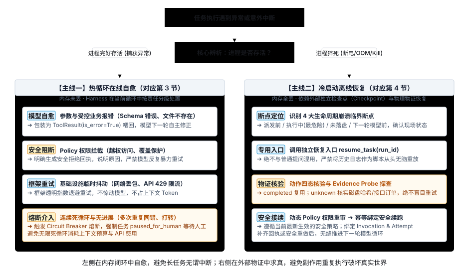
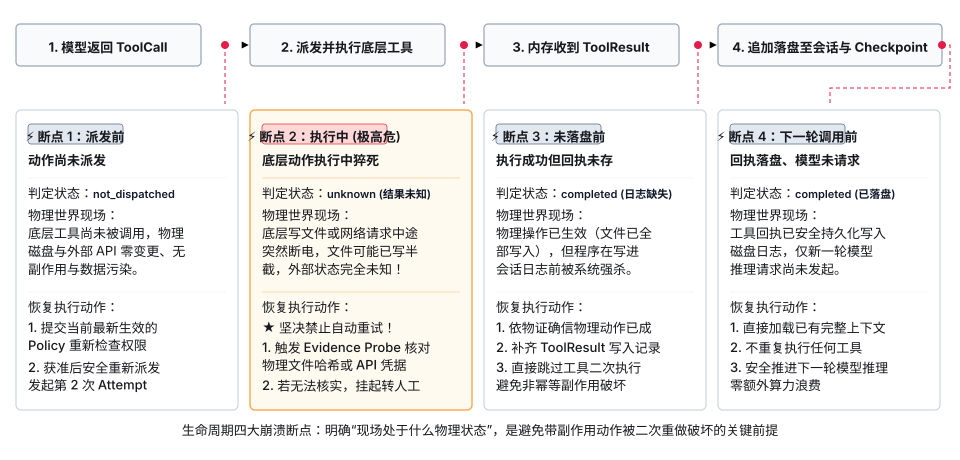

Recovery：中断检查点、异常容错与安全恢复
在 Agent 执行真实长任务的过程中，遇到异常报错与物理中断是必然发生的现实。一套健全的容错与恢复体系，本质上是由四个核心问题推导而成的全景闭环：
- 发生什么错误（错误类型）：是进程完好时的代码与业务异常（在线故障），还是宿主机断电、OOM、强制杀进程等系统猝死（离线崩溃）？
- 在何时发生（生命周期位置）：是发生在单步循环内部的参数解析与工具执行点，还是发生在跨越进程与外部世界交互的临界断点？
- 现场如何记录（状态载体）：是在会话历史中追加错误观察回执，还是在会话文件外独立固化检查点（Checkpoint）与物理物证（Evidence）？
- 如何分流恢复（恢复策略）：是在内存热循环中引导模型自我纠错或框架自动退避，还是在冷启动时按四步管线核验物证并断点续跑？
本章围绕上述全景链条展开系统推导。代码实践与测试注入见阶段 7：中断后怎样安全继续。
1. 问题起点：为什么保存了历史还不等于能安全恢复？
默认情况下，普通的 Agent 会话记录仅负责按顺序追加写入消息（如用户提问、模型响应、工具回执）。但在生产长任务中，进程可能因断电、OOM（内存耗尽）、超时或宿主机重启在中途突然死亡。考虑以下典型场景：
- 用户：“帮我生成一份审计报告
audit.log，并调用支付接口完成服务续费。” - 模型：提出调用
write_file(path="audit.log", content="...")。 - （系统动作：底层文件已在物理磁盘写入成功，或外部支付网关已成功扣款）
- （意外中断：在程序将执行回执写入 JSONL 日志之前，物理机断电或进程因 OOM 突然被系统强杀）
- （系统重启）
如果此时仅依据日志记录进行“无脑重放”，日志中只有“模型发起调用”而没有回执，系统会误以为动作从未执行过，从而再次发起写文件或再次调用扣费接口——导致磁盘文件被二次篡改破坏，或产生灾难性的重复扣款！
要实现安全恢复，系统必须将三类数据物理分离：
| 数据对象 | 存储内容 | 在恢复流程中的核心作用 |
|---|---|---|
| 会话记录（Transcript） | 用户提问、模型完整回答与工具观察回执 | 证明对话中“说过什么、发生过什么”，供模型生成下一轮上下文与人工回溯排查。 |
| 执行检查点（Checkpoint） | 当前任务停在哪个 Step、待确认动作标识与生命周期指针 | 记录“推进到了哪一步”，是崩溃重启后的定位锚点，防止重头盲目计算。 |
| 动作执行物证（Receipt / Evidence） | 物理磁盘状态（时间戳、哈希）或外部 API 幂等状态查询回执 | 核对“动作是否在物理世界真实生效”，解决网络超时和日志缺失时的状态不确定性。 |
2. 全景辨析：热循环在线自愈 vs 冷启动离线恢复
当任务在执行中遇到问题时，首先必须辨析：进程本身是否依然存活？
在工程实现中，开发者极易将“工具执行报错”与“系统崩溃断点”混为一谈。它们是两个完全正交的维度，对应两条截然不同的容错主线：
| 比较维度 | 热循环在线自愈（Hot-Loop Fault Tolerance） | 冷启动离线恢复（Cold-Start Crash Recovery） |
|---|---|---|
| 物理状态 | 进程完好存活，执行遇到预期或未预期的报错。 | 进程突然死亡（断电、OOM、SIGKILL），内存数据全丢。 |
| 能否捕获 | 代码内的 try...except 可以直接捕获并处理。 |
无法被代码捕获，控制权直接交还给操作系统。 |
| 发生位置 | 发生在工具函数内部、参数校验层或外部 API 通信层。 | 发生在 Harness 生命周期与外部世界的交界临界点。 |
| 数据载体 | 包装为 ToolResult(is_error=True) 写入当前会话记录。 |
独立持久化到外部检查点（Checkpoint）与物理物证。 |
| 处置策略 | 在线闭环自愈：分类分级处置（模型修正、框架退避、熔断）。 | 离线安全接续：重启后加载 Checkpoint，核实物证后继续推进。 |
| 核心风险 | 模型陷入死循环、无限重试烧干 Token、越权操作。 | 盲目从头重做导致写文件被覆盖、重复扣款等非幂等副作用。 |
理清了这一核心辨析，整个容错体系的演进脉络便一目了然：
- 第 3 节（热自愈）：先解决进程存活时的在线容错——当工具调用失败时，什么时候让模型自愈重试？什么时候由框架自动退避？什么时候必须安全阻断？
- 第 4 节（冷恢复）：再解决进程猝死后的离线恢复——任务到底会在生命周期的哪些临界点崩溃？重启后怎样按标准化管线安全复原？

3. 在线自愈机制：Agent 全系统各生命周期的故障矩阵与自愈策略
很多开发者初学时会误以为“热循环在线自愈仅仅是处理工具执行报错”。实际上，在 Agent 完整的单步执行闭环中，故障可能发生在 6 个不同的关键生命周期层级。如果把所有错误都无脑抛给大模型重试，不仅会白白烧干 Token 预算，还会导致死循环或越权风险。
3.1 架构视角：基础设施底座 vs 工具生命周期的三大交互边界
如果从 Agent 执行循环的“交互边界”来审视，系统中的 6 大环节绝非孤立存在，而是清晰地分属于两大层次：
- 基础设施与通信底座（环节 ①~②）：处于模型决策之前，解决“物理通道与容量供给”问题——发给模型前 Token 预算装不装得下（Context 裁剪与大输出折叠）、物理网络能不能连通供应商（网络重试与 429 退避）。
- 工具调用的全生命周期（环节 ③~⑥）：围绕模型使用工具展开，依次跨越三大交互边界：
- 边界一：工具 ⟷ 大模型交互（环节 ③ 空间参数契约 + 环节 ⑥ 时间多轮收敛）：
- 空间维度（③ 意图与参数契约）：模型在当下单步能否准确表达工具调用，有无 JSON 残缺、类型错误或幻觉工具名；
- 时间维度（⑥ 多轮时序收敛）：模型在连续多轮中是否陷入思维僵局、参数打转或无休止重试，能否平稳收敛。
- 边界二：工具 ⟷ Policy 安全策略（环节 ④ 规则守门）：
- 哪怕模型意图合规、工具代码完好，在真正触碰物理世界前必须经受 Policy 的安全审查。Policy 享有“一票否决权（Fail-Closed）”，阻断越权路径与违规覆盖。
- 边界三：工具 ⟷ 物理现实世界（环节 ⑤ 自身逻辑与宿主环境）：
- 工具获准调用后，在操作系统和业务现实中执行遇到的摩擦：代码内部 Bug、目标文件物理不存在、外部命令非 0 退出或子进程卡死超时。
- 边界一：工具 ⟷ 大模型交互（环节 ③ 空间参数契约 + 环节 ⑥ 时间多轮收敛）：
3.2 Agent 全系统各环节故障全景矩阵
可靠的 Harness 必须按层级明确“故障发生在哪个环节、责任归谁、由谁来处置”：
| 执行环节 | 可能发生的典型故障 | 故障性质与根因 | 自愈 / 处置策略（谁来处理） |
|---|---|---|---|
| ① 上下文与预算管理 (Context Manager) |
* 历史消息堆积导致 Token 溢出（Context Length Exceeded） * 工具返回几万行日志挤爆模型单次窗口极限 |
容量物理超限 |
Harness 自动裁剪与折叠： * 前置动态裁剪可选的已完成历史任务（保留必要 System 与当前任务）； * 对超大工具输出自动写入独立磁盘文件并摘要化（Offloading），不向模型硬塞巨量文本。 |
| ② 模型服务通信层 (Model Service) |
* 偶发网络丢包、TCP 连接超时 * 供应商 429 限流（TPM/RPM 耗尽）或 503 过载 * 401 密钥失效或 404 模型不存在 |
基础设施链路抖动 / 配置致命错误 |
框架透明指数退避 / 快速失败： * 链路抖动由底层客户端带抖动指数退避重试 2~3 次，不惊动模型、零消耗 Token； * 密钥或配置错误立即 Fail Fast 阻断并报警，绝不盲目重试。 |
| ③ 输出协议与解析层 (Parser / Schema) |
* 模型返回的 ToolCall JSON 残缺不全或格式错误 * 模型凭空编造不存在的工具名（Unknown Tool） * 必填参数缺失或类型错误（Schema 校验失败） |
模型输出格式幻觉与协议偏差 |
格式报错喂回 Observation（模型自愈）： * Harness 捕获解析异常，包装成清晰的语法与结构指引（如“缺失必填参数 path，期望类型为 string”）； * 模型在下一轮依据错误提示自主纠错。 |
| ④ 安全策略审查层 (Policy Enforcement) |
* 模型试图越权读取工作区外的敏感路径（路径穿越） * 模型试图覆盖已有受保护的关键文件 * 高危动作人工审批超时（HITL TTL 超时） |
安全合规阻断 |
默认拒绝并明确阻断（Fail-Closed）： * Policy 返回明确拒绝回执，禁止模型反复发起暴力重试，要求其向用户如实解释或换合规路径； * 审批超时自动作废，防止任务挂死。 |
| ⑤ 工具执行与运行层 (Tool Execution) |
* 受控业务报错（文件不存在、命令非 0 退出） * 工具代码内部未捕获的 Bug（非受控崩溃） * 执行外部子进程或 Shell 命令挂死卡住 |
业务现实失败 / 工具环境异常 |
结构化回执喂回 / 防御罩捕获 / 超时强杀： * 受控失败包装为 ToolResult(is_error=True) 喂回模型；* 工具顶层捕获非致命异常，防止整个 Agent 崩溃； * 外部进程施加 Timeout 硬限制，超时直接强杀。 |
| ⑥ 循环流转与收敛控制 (Loop Controller) |
* 模型陷入死胡同，连续多次传入相同错误参数 * 工具 A 与工具 B 之间互相推诿打转（Ping-Pong） * 步数达到上限仍无结论（Max Steps Exceeded） |
模型思维僵局与发散失控 |
断路器熔断介入（Circuit Breaker / HITL）： * 连续失败计数或指纹重复达到阈值立即熔断； * 任务置为 paused_for_human 挂起等待人工，防止无限烧钱。
|
3.3 运行时自愈的四级处置矩阵：什么时候让模型重试？
从上述全景可以看到，系统绝不是“只要出错就找大模型”，而是严格遵循分级分层治理原则：
- 模式 1：模型自主纠错（Model Self-Correction）
- 适用场景：参数校验失败、JSON 格式残缺、工具名写错、文件不存在等受控业务报错。
- 底层机理：Harness 捕获错误并结构化包装为
ToolResult(is_error=True, content="...")，作为 Observation 追加写入上下文。大模型凭借自然语言理解能力，在下一轮自动纠正参数或尝试备选工具。
- 模式 2：安全明确阻断（Policy Denied，严禁重试）
- 适用场景：违反安全边界的越权访问、覆盖保护文件或审批超时。
- 底层机理：Policy 判定拒绝后直接生成拦截回执，明确告知“已被系统安全策略阻断”。系统禁止模型在同一轮中反复暴力重试相同操作，迫使其向用户解释或调整任务方向。
- 模式 3：框架透明退避（Framework Backoff，不惊动模型）
- 适用场景：调用模型自身接口或外部 API 时发生的偶发网络抖动、HTTP 429 限流或 503 临时不可用。
- 底层机理：完全由底层网络客户端或 Harness 框架层执行带抖动的指数退避（Exponential Backoff with Jitter）自动重试 2~3 次。物理链路故障属于基础设施问题，绝不能浪费昂贵的模型 Token 和有限的上下文窗口去让模型重新推导。
- 模式 4：断路器熔断介入（Circuit Breaker，人工介入 HITL）
- 适用场景：模型产生逻辑僵局，连续 3 次传入完全相同的错误参数，或在两个工具间无限来回打转。
- 底层机理：触发 Loop 断路器，强行打断死循环，将任务状态置为
paused_for_human（暂停并告警等待人工干预），坚决防止无限消耗上下文预算与算力账单。
4. 离线恢复机制：进程崩溃后的安全续跑管线
当进程遭遇物理崩溃（断电、OOM、SIGKILL）突然猝死后，内存数据全部清空。要实现安全恢复，必须先摸清崩溃发生时的生命周期临界点，再通过标准化的恢复管线安全接续任务。
4.1 生命周期中的四大崩溃临界断点
在 Agent 的单步执行循环中，系统与外部环境交互的过程可以划分为四个最关键的崩溃切分断点：

- 动作派发前中断：模型已返回调用意图，但 Harness 尚未调用底层函数。
- 现场状态：外部世界无任何物理变更，数据无污染。
- 恢复要点：按当前最新生效的 Policy 重新审查权限后，安全重新派发。
- 动作执行中／返回前中断：底层写文件或网络请求正在进行，进程突然死亡。
- 现场状态：最危险的临界点！底层动作是否已生效完全未知（文件可能已写了一半，外部请求可能已到账）。
- 恢复要点：绝对禁止盲目自动重试，必须先调用物证探查器核对物理状态；若无法确认，强制挂起转人工。
- 收到结果但未落盘前中断：底层操作已成功，内存中已拿到 ToolResult，但在追加写入会话文件前崩溃。
- 现场状态：物理动作已真实生效，但会话日志缺失该回执。
- 恢复要点：依据幂等键与物证核实已成功，直接补齐回执写入记录，跳过工具执行。
- 结果落盘后、下一轮模型请求前中断：工具回执已安全持久化写入磁盘，但尚未发送给模型发起新一轮推理。
- 现场状态：历史记录完整无损，仅下一轮推理尚未开始。
- 恢复要点：直接加载已有完整上下文，推进下一轮模型推理，零重复执行。
4.2 恢复执行的四步标准化管线（底层推导）
在设计恢复流程时，必须严格执行以下四步标准化管线：
- 独立恢复入口（Resumed Run）：
恢复操作必须通过专用的
resume_task(run_id)入口执行，不与接收新提问的run_task(prompt)混用。严禁为了“图省事”直接在数据库中把未完成的任务强行改成completed——这会导致日志中出现无回执的悬空 ToolCall，破坏大模型协议上下文的完整性。 - 判断动作状态（严格区分四态与物证核查）：
扫描 Checkpoint 中所有未闭合的工具调用，严禁只有二元的“成功/失败”。在涉及写文件或调用外部支付等带副作用的操作时，二元判断是致命的：
- 若误判为“失败”并自动重做：若崩溃前底层文件已写完或外部 API 已扣款，盲目重跑会导致磁盘文件被二次覆盖破坏或产生重复扣款事故；
- 若盲目判定为“成功”并继续推进：若崩溃前文件只写了一半损坏或请求失败，后续步骤会基于空气报错崩溃。
因此，系统必须通过以下四态模型真实反映动作在物理世界与检查点中的状态：
动作状态（ status）物理世界真实情况 在 Checkpoint 中的呈现形态 恢复引擎的应对策略 completed
（已确认完成）工具在中断前已顺利执行完毕，执行回执完备。 status: "completed"，附带完整result数据与完成时间戳。直接复用已有结果，跳过工具执行，零算力浪费推进下一轮模型推理。 not_dispatched
（尚未派发）模型虽提出了 ToolCall，但 Harness 尚未调用底层函数，进程就已猝死。 status: "not_dispatched"，物理尝试列表attempts: []为空。外部世界零污染，按当前最新 Policy 重新审查权限后安全派发。 running
（后台运行中）外部异步任务或长耗时子进程（如云端资源创建、微调作业）仍在后台运行。 status: "running"，记录外部任务句柄job_id或pid。重新挂接现有句柄继续轮询等待，严禁启动重复实例。 unknown
（结果未知）最危险的临界状态：底层操作进行中、网络返回途中或回执写入磁盘前猝死。 status: "unknown"，包含idempotency_key、未完成attempt与evidence_probe探查配置。严禁自动重试！触发物证探查器核实；若无法查明，强制挂起转交人工介入（ paused_for_human）。
动作四态流转与物证核查状态机：具备清晰的起始、四态流转、物证判定分流与闭合结束环节。 - 重新校验 Policy 权限（动态安全审查）：
即使在中断前该动作已被 Policy 批准，在恢复重试时必须按当前最新的 Policy 重新做一次权限检查。因为在系统崩溃到恢复的这段时间里，用户可能修改了权限配置（如撤销了写权限），绝不能以历史批准记录绕过当下的安全防线。
- 持久化恢复进度与幂等绑定（Invocation 与 Attempt）：
为每次逻辑调用（
Invocation）分配全局唯一的幂等键（idempotency_key），并将每次物理重试记录为独立的尝试（Attempt）。恢复探查或重新执行成功后，先将回执写入磁盘 Checkpoint，再拉起模型继续推进循环。
5. 会话记录外需要补充哪些状态？（样本数据结构与场景案例）
如果系统只保存普通的聊天记录（[{"role": "user", ...}, {"role": "assistant", ...}]），一旦崩溃就无法知道工具执行到底处在哪个临界点。因此，可靠 Harness 必须在对话文件外，独立维护一份任务运行检查点记录（Run Checkpoint）。
5.1 贯穿场景：Session、State 与 Checkpoint 的职责与数据结构样式对比
为了直观区分三者的职责边界与存储形态，考虑以下贯穿业务场景：
- 用户：“请帮我生成一份审计报告
reports/audit.log，并调用扣费接口支付 10 元服务费。” - 模型：第 1 步先决定调用
write_file(path="reports/audit.log", content="AUDIT OK")。 - （系统动作：底层文件刚写入磁盘，但在程序将执行回执写入日志之前，进程因 OOM 突然被系统强杀）
此时，三类核心数据对象的表现形态、字段定义与设计意图截然不同：
1. Session 数据结构（会话层 · 磁盘持久化 JSONL）
核心职责：记录人类与模型的完整对话历史（Transcript），为后续多轮追问提供上下文，供人工审计回溯。崩溃发生时，末尾缺少对应的工具回执，处于悬空未闭合状态。
{
"session_id": "sess_20261030_001",
"created_at": "2026-10-30T10:00:00Z",
"working_dir": "/workspace/project_a",
"messages": [
{
"role": "user",
"content": "请帮我生成一份审计报告 reports/audit.log，并调用扣费接口支付 10 元服务费。"
},
{
"role": "assistant",
"tool_calls": [
{
"id": "call_write_001",
"name": "write_file",
"arguments": { "path": "reports/audit.log", "content": "AUDIT OK" }
}
]
}
// 崩溃发生瞬间：尚未追加写入 ToolResultMessage！会话记录在此截断悬空
]
}| 字段名 | 类型 | 核心设计意图与在恢复中的作用 |
|---|---|---|
session_id |
String | 全局唯一会话标识，用于多轮对话历史的物理隔离与归组，防止不同对话串味。 |
working_dir |
String | 绑定该会话的基础工作目录，恢复与追问时用于环境与路径越界合规校验。 |
messages |
Array | 有序对话条目（含用户 Prompt、模型 ToolCall 与工具回执）。恢复局限性：此处记录的是“模型说过什么”，在崩溃发生瞬间由于缺少回执，单靠它是无法判断底层物理文件到底写完没有的。 |
2. State 数据结构（运行时状态 · 进程内存快照）
核心职责：Agent Loop 在内存中的变量全集，指导当前这一秒往哪一步流转（下一步调模型、派发工具还是退出）。生命周期随进程生灭，进程一旦崩溃，内存数据全丢。
{
"active_session_id": "sess_20261030_001",
"current_run_id": "run_001",
"loop_phase": "dispatching_tool",
"step_index": 1,
"budget": {
"max_steps": 10,
"remaining_steps": 9,
"used_tokens": 1240
},
"runtime_handles": {
"active_subprocesses": [],
"model_client_connection": "<HTTPConnection pool=0x7f88>"
}
}| 字段名 | 类型 | 核心设计意图与在恢复中的作用 |
|---|---|---|
loop_phase |
Enum | 当前单步在循环内部的实时阶段（如 model_invoking / dispatching_tool）。随内存释放，不能用于跨进程恢复。 |
step_index / budget |
Object | 控制单次任务的步数上限与 Token 额度，用于在线执行中的防死循环熔断控制。 |
runtime_handles |
Object | 底层活跃的非序列化句柄（如活跃子进程 PID、TCP 连接池）。进程死亡后操作系统自动回收，恢复时必须重建。 |
3. Checkpoint 数据结构（检查点 · 独立磁盘持久化控制面）
核心职责：专为“崩溃恢复”独立固化的控制元数据。记录任务推进到了哪一步、各个工具调用的确认状态（严禁只有成功/失败二元值）、全局幂等键与物证探查策略，是冷启动重启时的法定裁判依据。
{
"run_id": "run_001",
"session_id": "sess_20261030_001",
"status": "interrupted",
"interrupted_at": "2026-10-30T10:00:05Z",
"step_id": 1,
"lifecycle_point": "tool_execution_interrupted",
"invocations": [
{
"invocation_id": "inv_write_report_01",
"call_id": "call_write_001",
"tool_name": "write_file",
"arguments": {
"path": "reports/audit.log",
"content": "AUDIT OK"
},
"has_side_effect": true,
"idempotency_key": "idem_run001_s1_c1",
"status": "unknown",
"attempts": [
{
"attempt_id": 1,
"dispatched_at": "2026-10-30T10:00:04Z",
"finished_at": null,
"error": "Process terminated by SIGKILL (OOM)"
}
],
"evidence_probe": {
"strategy": "filesystem_stat",
"target": "reports/audit.log",
"expected_hash": "e3b0c44298fc1c149afbf4c8996fb92427ae41e4649b934ca495991b7852b855",
"probe_result": "target_exists_and_hash_matched"
}
}
]
}| 字段名 | 类型 | 核心设计意图与在恢复中的作用 |
|---|---|---|
status / interrupted_at |
String | 任务终态标记为 interrupted（中断），记录发生中断的时间戳，防止恢复引擎误将其视为正常结束的任务。 |
lifecycle_point |
Enum | 精准定位任务夭折在生命周期的哪一切点（如 tool_execution_interrupted 工具执行中猝死），为恢复提供锚点。 |
has_side_effect |
Boolean | 带副作用安全防御开关：只读动作（如 read_file）允许在重审 Policy 后重新派发；带副作用动作（写文件、扣款）严禁自动重做！ |
idempotency_key |
String | 全局唯一幂等键，在跨网络请求、外部订单创建或恢复重试时确保“无论尝试多少次，底层动作只生效一次”。 |
status |
Enum | 动作未闭合四态（completed / not_dispatched / running / unknown），直接决定恢复引擎的分流分支。 |
attempts |
Array | 物理执行尝试轨迹数组。记录每次派发时间、结束时间与报错信息，保留完整的物理审计链，不污染对话历史。 |
evidence_probe |
Object | 物证探查策略配置：明确指派如何通过物理手段核查结果（如策略类型、目标文件路径、预期内容哈希与探查结论）。 |
5.2 恢复引擎实操：根据不同“动作状态”进行错误中断处理与分流恢复
当系统崩溃重启并调用专用恢复入口 resume_task(run_id) 时，恢复引擎读取 Checkpoint，对 invocations 列表中的未闭合动作按其 status 严格执行差异化处理逻辑：
def resume_task(run_id: str):
checkpoint = load_checkpoint(run_id)
session = load_session(checkpoint.session_id)
for inv in checkpoint.invocations:
match inv.status:
case "completed":
# 状态 1：已确认完成 ➔ 直接复用已有物理回执，跳过工具执行
session.append_observation_if_missing(inv.call_id, inv.result)
case "not_dispatched":
# 状态 2：尚未派发 ➔ 动态重新审查当前最新 Policy
policy_verdict = policy.evaluate(inv.tool_name, inv.arguments)
if policy_verdict.is_allowed:
result = execute_tool(inv.tool_name, inv.arguments)
inv.status = "completed"
session.append_observation(inv.call_id, result)
else:
inv.status = "policy_denied"
session.append_observation(inv.call_id, ToolResult(error="Policy Denied"))
case "running":
# 状态 3：后台异步执行中 ➔ 重新挂接已有任务句柄，等待完成
job_handle = reattach_external_job(inv.job_id)
result = job_handle.wait_or_poll(timeout=30)
inv.status = "completed"
session.append_observation(inv.call_id, result)
case "unknown":
# 状态 4：极高危未知态 ➔ 坚决禁止自动重跑！启动物证探查器
probe_result = run_evidence_probe(inv.evidence_probe)
if probe_result == "target_exists_and_hash_matched":
# 分支 A：物证匹配 ➔ 补齐回执，就地修正为 completed
inv.status = "completed"
session.append_observation(inv.call_id, ToolResult(content="OK (Reconstructed)"))
elif probe_result == "target_not_found":
# 分支 B：确认未发生 ➔ 重置为 not_dispatched，重新安全派发
inv.status = "not_dispatched"
retry_dispatch_with_policy_check(inv)
else:
# 分支 C：物证冲突或状态无法查明 ➔ 立即熔断挂起，等待人工介入
checkpoint.status = "paused_for_human"
save_checkpoint(checkpoint)
raise HumanInterventionRequired(f"Tool {inv.tool_name} status uncertain")
# 动作全部闭合后，拉起模型继续推进后续循环
return agent_loop.continue_run(checkpoint, session)5.3 场景演练对比：两类故障的差异化恢复路径
| 故障场景 | 崩溃发生点与状态判定 | 恢复引擎的实际执行动作 |
|---|---|---|
| 场景 A：带副作用的写操作在执行中崩溃 |
* 动作：write_file* 状态： unknown* 崩溃点：动作执行中／返回前 |
1. 恢复命令读取 Checkpoint，发现 inv_write_report_01 状态为 unknown。2. 阻止自动重写，触发 filesystem_stat 探查器核对 reports/audit.log 的物理存在与内容哈希。3. 确认文件已完整落盘且哈希一致，直接合成成功回执补写入会话记录（Transcript）。 4. 将 Checkpoint 中的动作状态由 unknown 修正为 completed，零算力浪费直接推进下一轮模型推理。
|
| 场景 B：只读操作在派发前崩溃 |
* 动作：read_file* 状态： not_dispatched* 崩溃点：动作派发前 |
1. 恢复命令扫描到只读动作未执行。 2. 提交当前生效的 Policy 重新审查读取权限。 3. 审查获准后，发起第 2 次 Attempt 执行真实读取。 4. 将最新读取回执保存为 Observation，恢复模型循环。 |
6. 业界主流 Agent 容错与恢复方案对比
各开源项目和工业框架在处理“中断与恢复”时，根据其架构形态形成了不同的代表性模式：
| 方案 / 框架 | 核心容错机制 | 检查点粒度 | 中断与人工介入（HITL） | 适用场景与主要代价 |
|---|---|---|---|---|
| LangGraph | 基于图节点的 Checkpointer（Memory / Sqlite / Postgres）。 | Node 级别：每经过一个节点自动存盘一个版本快照。 | 原生支持在节点前/后调用 interrupt() 挂起，外部传参通过 resume() 恢复。 |
适合复杂状态图编排；但状态快照较大，需仔细设计持久化字段的序列化。 |
| OpenAI Assistants API | 基于服务端的 Run 状态机（queued → in_progress → requires_action）。 |
RunStep 级别：每个 ToolCall 和 Message 派生独立步骤。 | 模型提出 ToolCall 时 Run 进入 requires_action 挂起，客户端提交回执后恢复。 |
标准 SaaS 云端状态；强依赖外部托管，无法掌控底层执行细粒度断点。 |
| Temporal / Durable Execution | 工作流事件溯源（Event Sourcing）与 Activity 幂等执行。 | Activity 级别：每个外部动作绑定唯一 Token，历史自动重放。 | 原生支持长期休眠、定时器唤醒与人工审批信号（Signal）。 | 工业级可靠性最高；但要求工作流代码必须保持确定性（Deterministic），改造成本高。 |
| pi / Codex | 单线程 Rollout Reconstruction 与 Turn 完整性重建。 | Turn 级别：按递增序号维护消息链，未闭合调用补齐空回执。 | 通过只读检查历史回放重建模型上下文，遇到破损断行安全丢弃末尾。 | 极简高效，单机无外部重型依赖；但对多步骤外部副作用需依赖人工探查补全。 |
7. 期望达到的效果
- 断点位置精准还原：系统重启后能明确识别任务夭折在生命周期哪个断点，绝不从头盲目重新请求模型。
- 未知状态零盲目重试：对于结果未知的有副作用动作，必须探查物理物证或暂停等待人工确认，杜绝重复写入或重复扣费。
- 已完成步骤零算力浪费：已成功落盘的回执在恢复时直接复用，不重复调用工具或模型。
- 安全规则动态一致：恢复重新执行任何动作时，严格遵循当前环境生效的 Policy，不因历史记录豁免安全检查。
- 运行时异常自愈闭环：参数校验错误和业务异常以 Observation 形式喂回模型，模型在预算范围内自主修正，连续死循环时及时熔断。